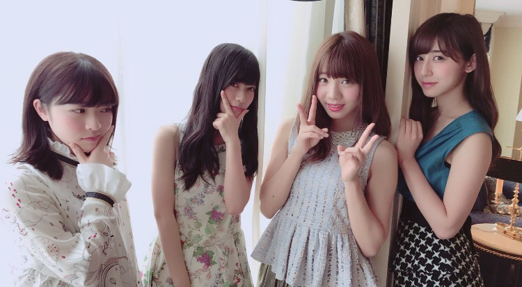
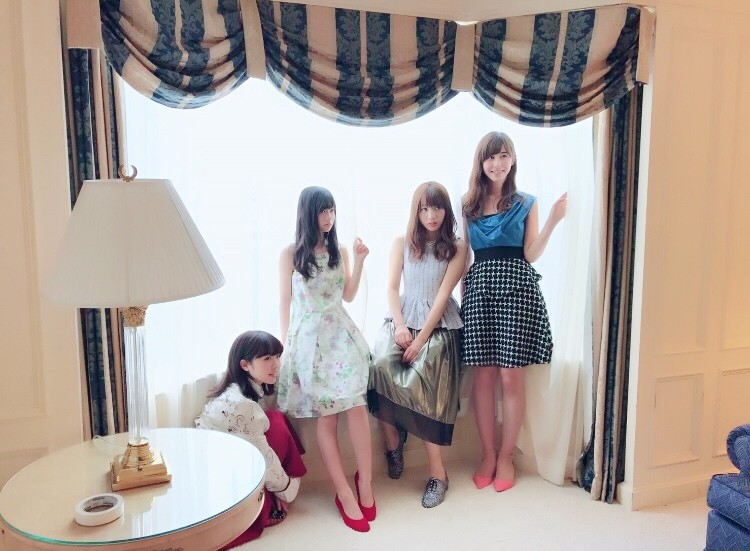
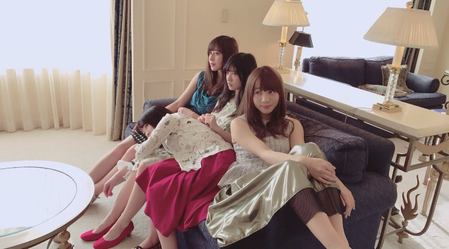
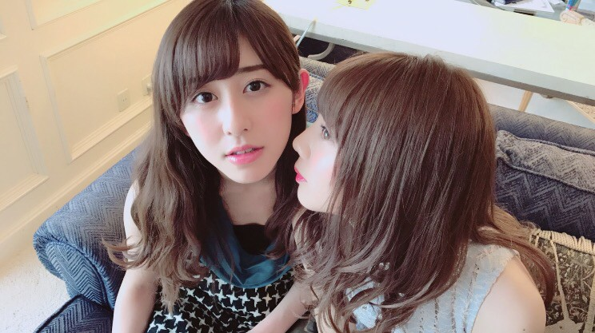

| 2016/12 28 Wed | 斎藤ちはる オフショット！ |
ちはるーむへようこそ。
今日は少し前だけど12/21に発売された
「B.L.T.」さんのオフショットを載せます◎
アンダーメンバーはパーティー風な
格好での撮影でした！

この4人でのカットがありました〜
珍しくもどこかしっくり。

窓辺で！
窓の光が綺麗でした( ¨̮ )

ソファで！
並びが私蘭世みりあ愛未だったのですが
はたから見たら
私と蘭世、みりあと愛未のそれぞれのペアの
雰囲気が似ていたみたいで
姉妹？母娘？みたいだったらしい。
誌面で確認して見てね◎笑

能條牧場ペアで！笑
そう、先日の乃木中で能條牧場を作れば？
みたいな事を愛未が設楽さんに言われ、
755で募集していたの。
(あれ募集だったのかな？笑)
それで立候補したら採用されたんだ！！笑
能條牧場初メンバー(´>∀<｀)ゝ
嬉しいし楽しそうだけど
何するんだろう。笑
B.L.T.さんではインタビューも受け
2016年についても少し振り返りました！
皆さん是非チェックしてください◎
--------------------------------♡
♬ ChihaMusic
「GO」BUMP OF CHICKENさん
聞いていて勇気が出てくる。
前に進むのは大変だし
正直辛い事ばかりだけど
頑張ろうって気になる。
"歩くのが下手って気づいた
ぶつかってばかり傷だらけ
どこへ行くべきかも曖昧
でこぼこ丸い地球の上"
今まで自分のことは器用なのかと
思っていたところもあったんだけど
私って本当不器用だな〜要領悪いな〜と
思う所が多すぎる事に気付いて
そういえばぶつかってばかりで傷だらけだなと
改めて思うんだ最近。
気付くの遅いかもしれないけど
気付いただけでも私にとっては進歩。
ぶつかりながらも進んで行かなきゃね。
そんな私にぴったりな歌詞。
紅白歌合戦ですが...
1期生、2期生、みんなで
出演できる事に決定しました！( ;o; )
今年も素敵な夢のようなステージで
今年を終わらせることが出来ます。
出させていただける事に感謝しつつ
楽しんでパフォーマンスをしたいと思います。
年末は紅白で私たちを探してね(﹡ˆ ˆ﹡)
おやすみ〜
斎藤ちはる